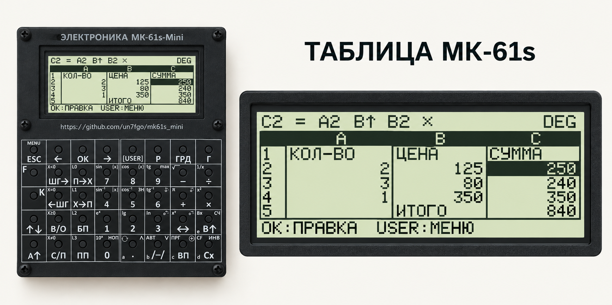
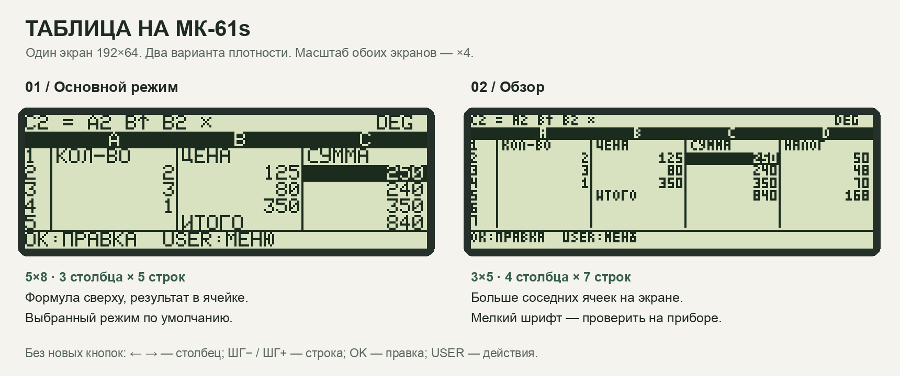
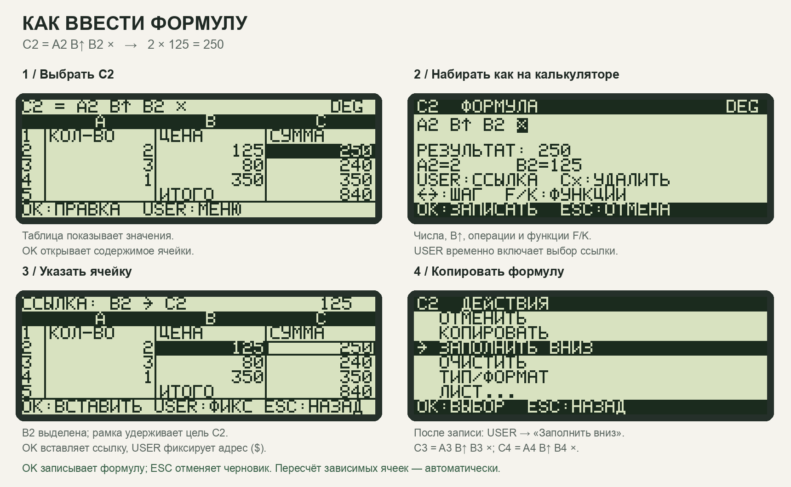

МК-61s / КОНЦЕПЦИЯ 01 / 8 ОКТЯБРЯ 2026
Таблица, которая считает
как калькулятор
Лист с адресами A1, B2… Формула — последовательность операций МК-61 со ссылками на ячейки. Макеты используют настоящие растры 5×8 и 3×5 из прошивки; исходные экраны — ровно 192×64.
Режим по умолчанию: 5×8, 3 столбца и 5 строк. Сверху — формула выбранной ячейки; внутри таблицы — её результат.
Переключатель показывает состояния макета. Ввод формул и вычисления здесь не реализованы.
Выбранная компоновка
Основной вид — 3 столбца × 5 строк, шрифт 5×8. Компактный режим 3×5 — для обзора. Верхняя строка всегда принадлежит выбранной ячейке, нижняя — доступным действиям. Заголовок приложения не занимает место в рабочем экране.

Иллюстрация компоновки, созданная встроенным imagegen. Корпус взят как визуальный ориентир; это концепт графического прибора. Точную геометрию показывают следующие пиксельные макеты. Промпт генерации.


Ввод формулы
Пример: в A2 записано 2, в B2 — 125. Для C2 вводим A2 В↑ B2 × и получаем 250. Ссылки вставляются выбором ячейки: печатать латинские адреса на приборе не требуется. Знак = на экране означает формулу и добавляется автоматически.
Ссылка ведёт себя как ввод числа в X по правилам МК-61; В↑ отделяет операнды, а OK сохраняет всю формулу. Пользователь редактирует последовательность операций; читабельный результат появляется сразу, когда черновик можно вычислить.
В новой ячейке одиночное число сохраняется как число. Как только добавлена ссылка или операция, черновик становится формулой. Отдельная клавиша «=» не нужна. Подпись вводится через USER → Тип/формат → Текст существующим буквенным редактором.
Как закрепить адрес
В режиме выбора ссылки USER переключает B2 → $B2 → B$2 → $B$2 → B2. Эти варианты означают свободную ссылку, закреплённый столбец B, закреплённую строку 2 и закрепление обоих. OK вставляет ссылку. Символ $ появляется автоматически; набирать его буквенным редактором не требуется.
| Клавиша | В таблице | В формуле |
|---|
| ← / → | Столбец | Предыдущий / следующий шаг |
| ШГ− / ШГ+ | Строка вверх / вниз | Переход по строкам при выборе ссылки |
| OK | Редактировать | Записать; в выборе ссылки — вставить |
| USER | Действия с ячейкой и листом | Выбрать ссылку; в выборе ссылки — фиксация адреса $ |
| Цифры, В↑, + − × ÷, F, K | Цифра начинает черновик нового значения | Обычный ввод калькулятора, включая функции |
| Cx | Очистка через меню действий | Удалить цифру / выбранный шаг |
| ESC | Выйти из листа | Отменить черновик; из выбора ссылки — вернуться к черновику |
Поведение ячеек
Три типа: число, подпись, формула. При копировании C2 в C3 относительные ссылки A2 и B2 становятся A3 и B3. USER в выборе ссылки переключает A2, $A2, A$2, $A$2. Фиксация действует на копирование; при вставке или удалении строк ссылка следует за исходной ячейкой.
После записи меняются только зависимые ячейки. Каждая формула считает с собственным начальным стеком; режим углов DEG/RAD/GRD хранится в листе. Пустая ячейка в числовой формуле даёт 0, ссылка на текст — ошибку типа.
Ошибки локальны: #ЦИКЛ, #ССЫЛ, #ЧИСЛО, #ТИП. Полное значение и объяснение ошибки открываются в деталях ячейки. Число не обрезается до другого числа: сначала научная запись, затем #####, если оно всё ещё не помещается.
Первая версия: один лист, числа и подписи, формулы, выбор ссылок, копирование и заполнение, отмена, сохранение и открытие. Функции — чистые операции калькулятора; размер листа, память, формат файла и скорость пересчёта требуют отдельного измерения.
Следующие решения: проверка шрифта на физическом экране, ввод подписей через существующий текстовый редактор, полный экран сохранения/открытия, политика автосохранения. Макет 16×2 можно спроектировать отдельно как просмотр одной ячейки.
Структурированная спецификация · Исходник растровых макетов